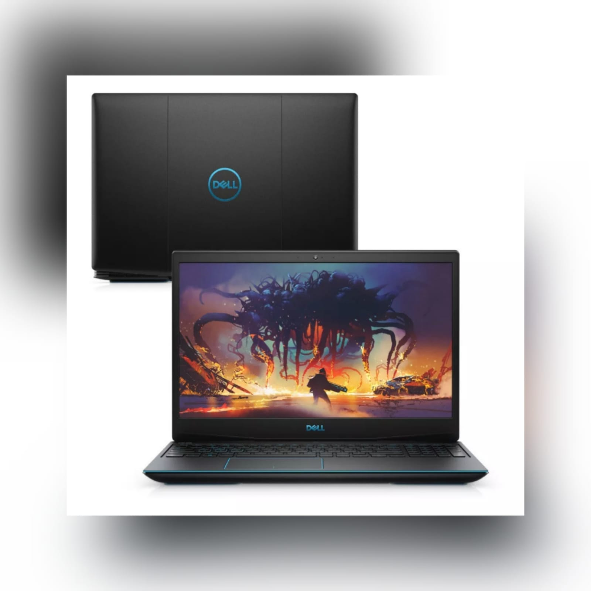

|  |
Características:
Marca: Dell
Linha: Dell Gamer G3
Memória Ram: 8GB
Marca Processador: Intel
Linha do Processador: Core i7
Nome do Sistema Operacional: Linux
Placa de Vídeo: NVIDIA GeForce GTX 1660
Descrição:
O G3 tem ficha técnica de respeito quando é considerada a faixa de preço de outros notebooks gamer de entrada. Para começar, o laptop emprega processadore Core i7 de oitava geração das linhas H da Intel, destinadas justamente a portáteis gamer e workstations móveis.
|